Огромный замок-кольцо из 382 игральных карт: волна ломает стены по кругу и заворачивает за угол, четыре башни рушатся ярусами, донжон складывается — и корона летит с вершины. Кинематографичная камера, PiP-планы рушащихся строений, честная физика cannon-es.
Проект начался с рендера в Blender и прошёл путь до интерактивного замка-кольца из игральных карт с кинематографичной камерой. Каждая эпоха жива — откройте любую и запустите прямо в браузере.
Первая машина: шар → домино → молоток-маятник → колокол. Симуляция в Blender 4.5 (Bullet), рендер Cycles, звук колокола синтезирован в Python. Отправная точка всей истории.
Статичный сайт с SVG-схемой машины, галереей из 6 кадров, видео, графиками телеметрии и звуком удара. Первый опыт «как показать симуляцию в интернете».
Всё своими руками: интегратор, коллизии, 3D-вид — ноль библиотек. Эксперимент, показавший цену готовых движков и научивший читать их исходники. Видео убрано, машина стала интерактивной.
Переход на промышленный движок Rapier и PBR-рендер three.js: солнечное освещение, тени, материалы. Дальше — большая волна правок по аудиту каждого элемента против эталонной схемы.
Rapier заменён на cannon-es: 3D-мир вместо 2D-плоскости, реальные домино с правильной геометрией, мёртвый старт второго шарика, длинная цепочка на 28 секунд — два яруса, две волны, два маятника. Жёсткие контакты и наклонная тумба, чтобы домино падали всегда.
Полноценное шоу: ксилофон из 5 нот по пути шара, финалист-120, кино-камера, которая сама летит за шаром, и финальный звон колокола на 11–15 секундах. Живой тест на проде — 5/5 фаз.
Вся машина построена только из игральных карт: щелчок по первой карте запускает пять волн вееров, они валят башни «Маяк» и «Гранд», улицу-замок из восьми Λ-домиков и гигант-пирамиду 8-7-6-5-4-3-2-1. Обрушение срывает карту-короля с вершины. Прогоны детерминированы.
Замок становится ОГРОМНЫМ: кольцо стен из 44 домиков (волна заворачивает за угол, а не бежит по прямой), 4 башни по 4 яруса и шестиярусный донжон с королём. Башни рушатся ярусами — по одному зданию за раз. Кинематографичная камера: общий масштаб всего замка, PiP-окна с крупными планами именно тех строений, что падают сейчас, и финальный отъезд на руины. Замедление ×0.3, динамическое разрешение против лагов, стабильные тени без мерцания.
Настоящие кадры из прогонов — от первого рендера в Blender до падения карты-короля.
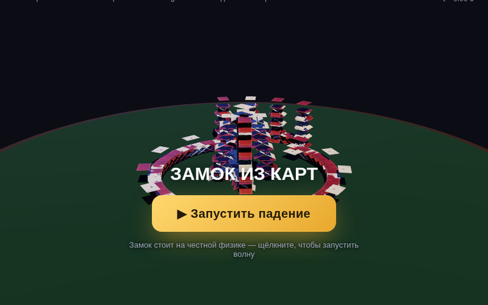
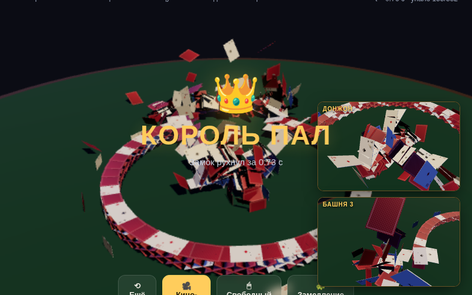
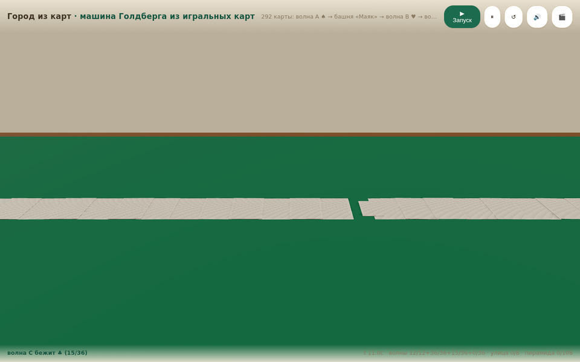
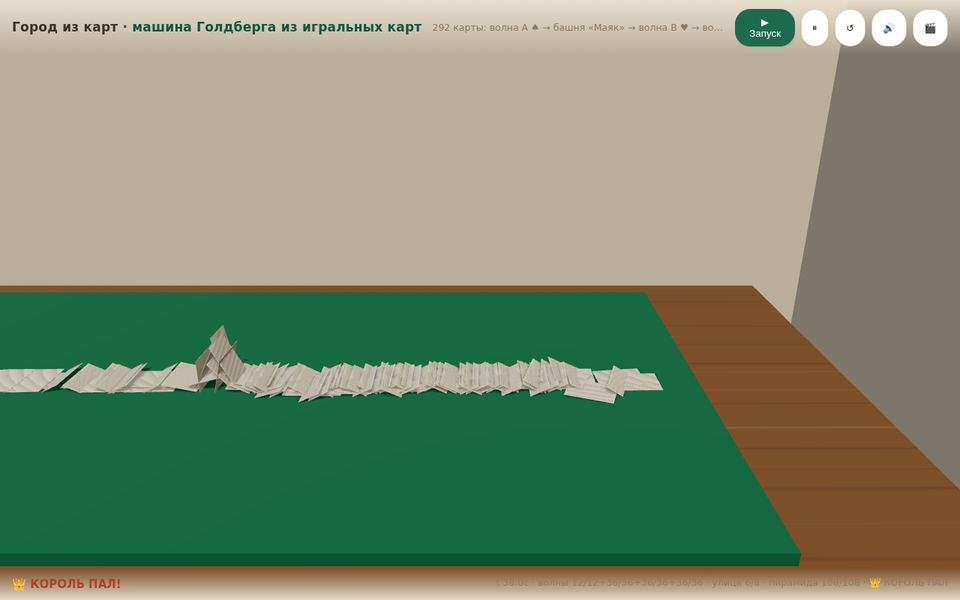
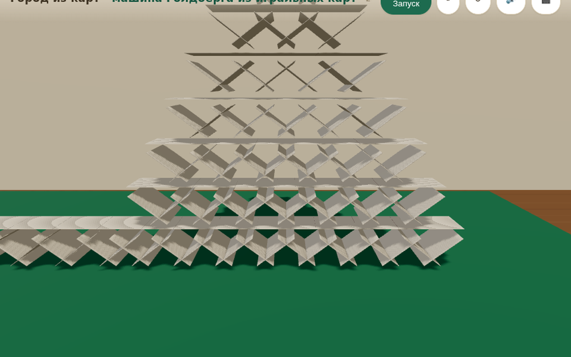
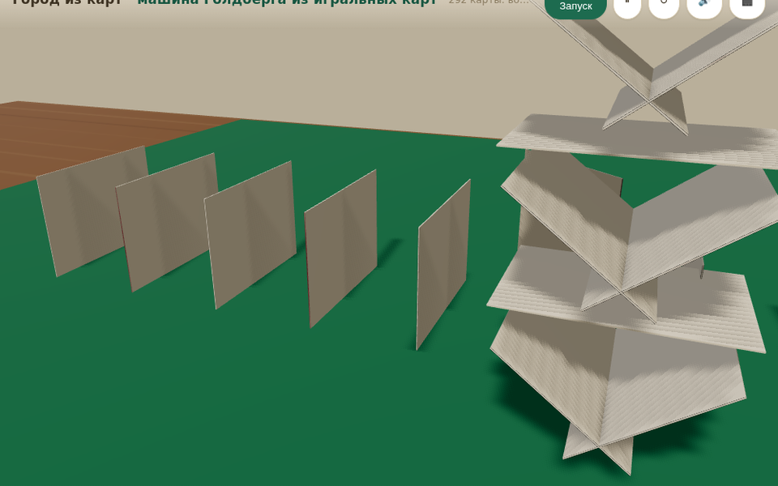
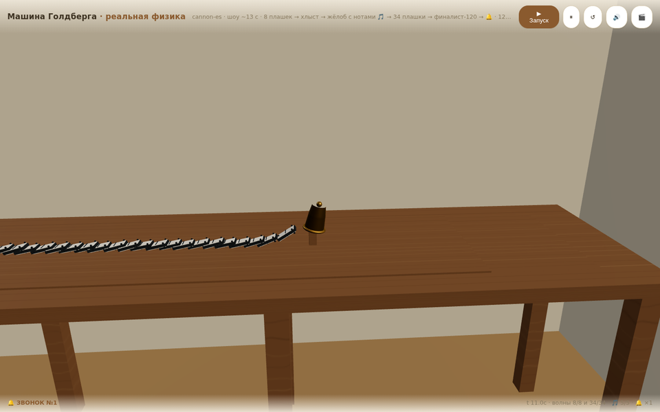
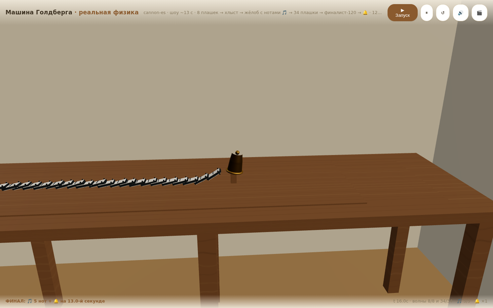
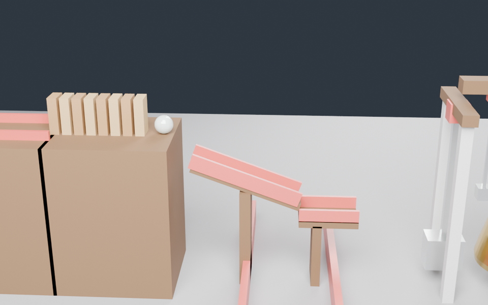
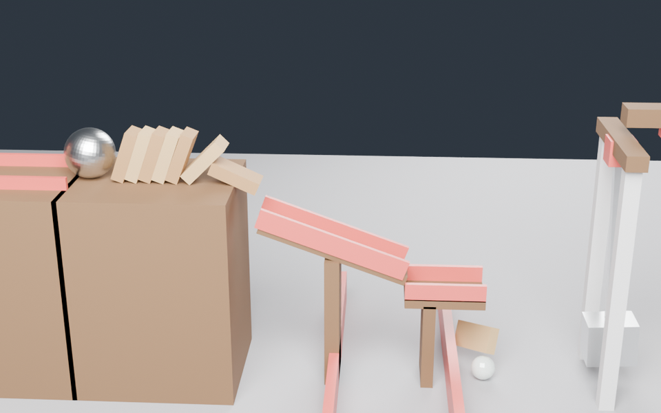
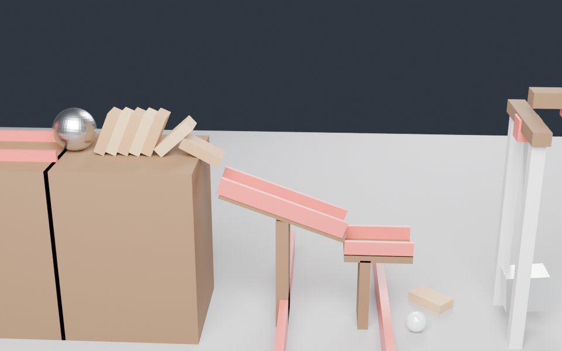
Ни одно падение в v7 не «нарисовано». Единственный источник правды — физический мир cannon-es; рендер только читает его состояние.
Карта толщиной 0.3 мм не стоит на ребре в дискретном солвере —
проверено стендом, падает за 0.01 с. Решение: мир не усыпляет тела,
каждая карта заморожена body.sleep() и стоит идеально,
а любое касание будит тело — дальше работает честная физика.
Второй нюанс: король и верхние этажи башен висели бы в воздухе, если опору выбило без прямого касания. Поэтому движение в 40 мм под спящим телом будит и его — пирамида рушится каскадом, как настоящая.
Прогоны воспроизводимы: три запуска подряд дают идентичные цепочки, повторный запуск после сброса — тот же результат. Тесты гоняют сцену headless-браузером и сверяют фазы по таймингам.
Каждая версия проходила живой прогон: загрузка без JS-ошибок, все фазы по таймингам, звон колокола/падение короля в окне, детерминизм повторного запуска. Для v7 на проде: 5/5 фаз, пирамида 108/108, король — 21-я секунда.
Каждая эпоха — отдельный релиз с заметками, скриншотами и архивом исходников этой эпохи.
| Версия | Кодовое имя | Движок | Что нового | Дата |
|---|---|---|---|---|
| v8.0.0 | Замок-кольцо | cannon-es 120 Гц | 382 карты, волна по кругу, башни ярусами, PiP-камера | 10.11.2026 |
| v7.0.0 | Город из карт | cannon-es 120 Гц | 292 карты, 5 волн, пирамида 108, король пал | 10.11.2026 |
| v6.0.0 | Шоу с колоколом | cannon-es 120 Гц | Ксилофон 5 нот, кино-камера, финалист-120 | 10.11.2026 |
| v5.0.0 | Реальные домино | cannon-es | 3D-мир, цепочка 28 с, два яруса, два маятника | 09.11.2026 |
| v4.0.0 | Rapier + PBR | Rapier WASM | Промышленный движок, three.js PBR, аудит схемы | 09.11.2026 |
| v3.0.0 | Свой физдвижок | собственный | Интегратор и коллизии с нуля, ноль зависимостей | 09.11.2026 |
| v2.0.0 | Сайт-отчёт | — | SVG-схема, галерея, видео, телеметрия | 09.11.2026 |
| v1.0.0 | Blender Bullet | Bullet (Blender 4.5) | Первая машина: шар → домино → колокол | 09.11.2026 |